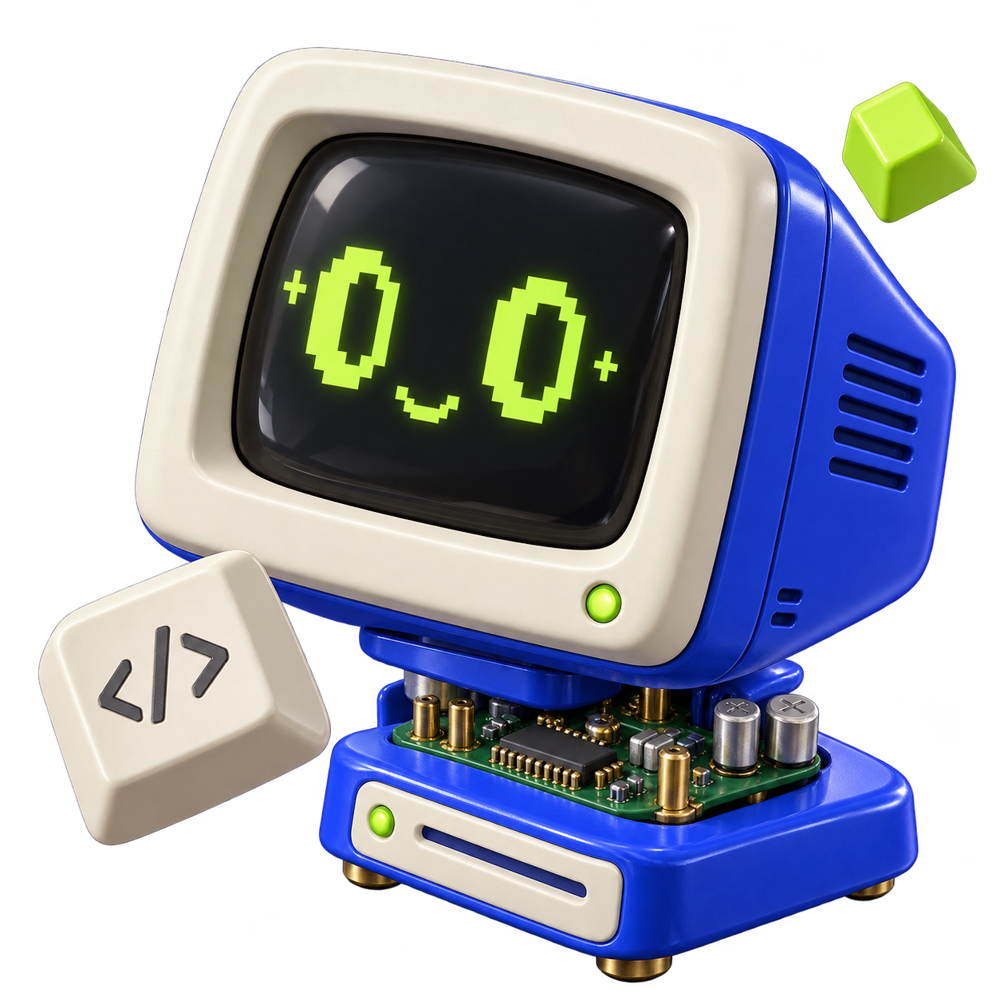
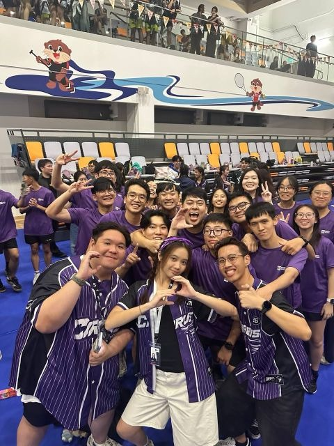

Dual-Pi attire checks, real-time visual feedback, and distributed image processing.
Raspberry Pi 5 / YOLOv8 / PyQt6

Hi, I’m Izz. I build things
where hardware meets software.
I’m a Computer Engineering undergraduate at Singapore Institute of Technology, building embedded systems, computer vision pipelines, and practical software.
Before engineering, I served as a Fire & Rescue Specialist. That experience still shapes how I work: stay calm, understand the problem, and trace it to the source.
A selection of team projects, from physical prototypes to software that solves real constraints.
Showing all 7 team projects.
Dual-Pi attire checks, real-time visual feedback, and distributed image processing.
Railway maintenance scheduling that adapts when access and crew availability change.
A multi-MCU mailbox combining parcel sensors, low-power control, and Wi-Fi notifications.
Route-aware shuttle dispatch with capacity limits and a strict 10-minute arrival window.
FitZ / Five-person team
JUNE 2026

PLiZ / LTA @ NUS / Five-person team
SEPTEMBER 2026

Personal engineering explorations, custom hardware setups, and self-directed experiments built outside the curriculum. A dedicated space for independent builds, with more in progress.
A hands-on deep dive into PC hardware assembly, thermal airflow dynamics, motherboard VRM load balancing, and BIOS-level memory timing optimization. Stress-benchmarked for maximum stability under sustained compute workloads.
Engineering doesn’t pause when a project wraps. I’m continually experimenting at the desk—breadboarding multi-sensor nodes, laying out custom PCBs, and compiling low-power firmware. If there’s an interesting problem, a prototype is already in the works.
New builds dropping soon.
Schematics, code repos & build logs actively in development.
Engineering isn't lived in isolation behind a terminal. It's forged in high-stakes operational turnouts, late-night camp logistics, and giving back to the next generation.

Three months of late-night prep, zero sleep, and one mission: make sure no incoming freshman felt alone stepping into SIT.
We didn't just run icebreakers—we built Cirrus 15 into a genuine family. From roaring cheers echoing across the sports hall to late-night debriefs, we pushed shy juniors out of their shells and watched them find their voice. The real testament? Months after orientation wrapped, this crew is still hanging out, cracking jokes, and backing each other up through the university grind.




Bunker gear soaked in sweat, sirens cutting through the night, and high-heat turnouts where second-guessing gets people hurt.
Station 441 drilled one reflex into my DNA: stay composed, communicate with absolute clarity, and isolate problems under pressure. We took that discipline straight to national stages—cutting through crushed wreckage and deploying robotics live before tens of thousands at NDP 2024 (TD40), then holding trackside standby as Formula 1 cars screamed past at 300 km/h, primed for high-speed fire containment in seconds.


Mentorship isn't about giving stiff lectures from a stage—it’s about showing up, listening without judging, and reminding kids they belong.
With MENDAKI's PEER programme, we took secondary school youths through gritty team trails to build real grit and self-belief. In our GoTech workshops, we put laptops, microcontrollers, and robotics directly in their hands. Watching a kid who swore "engineering isn't for me" suddenly light up when their custom circuit whirs to life—that’s the whole reason I mentor.


Demystifying tech and proving to youths that engineering isn't a closed club—it's theirs to build.
Mechanical foundations. Emergency response. Now, computer engineering.
Ngee Ann Polytechnic
Diploma, 2020-2023
Singapore Civil Defence Force
National Service, 2023-2025
NDP 2024 & F1 Standby
Singapore Institute of Technology
BEng (Hons), expected May 2028
MENDAKI Youth Mentor
Engineering team projects
Helix FYE Facilitator
Have a project, an opportunity,
or a good engineering problem?